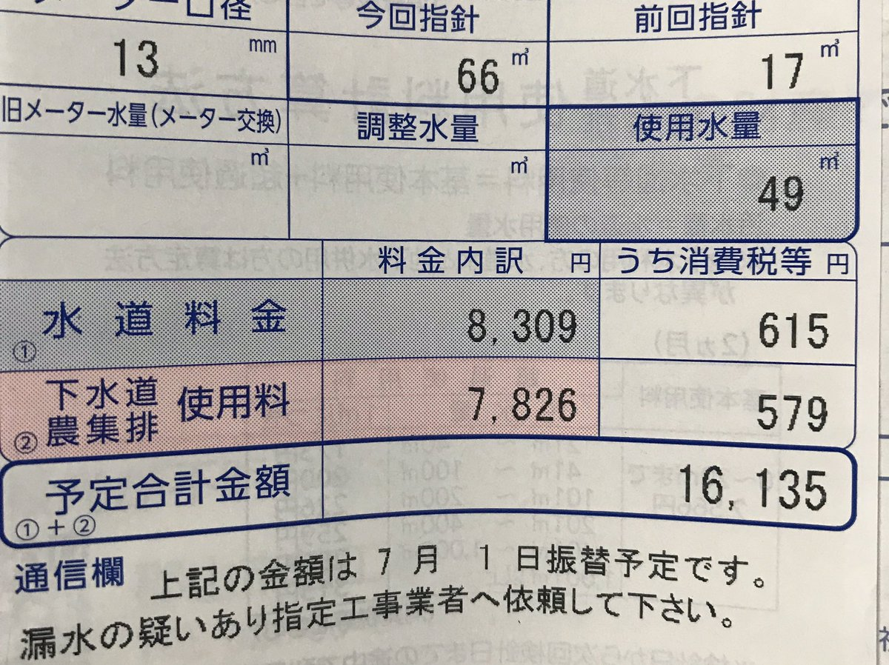

↑ゑ？？？？？？？？？？？？
いやいやいやいやおかしい。さすがにおかしい。
見たことあるか？？？？水道料金16000円超えの紙。これがそうだよ。見れてよかったね。
そうじゃない。いまだに驚きを隠せない。どうなってんのこれ？？？解明してよコナン君。マジで。
いやもうね、言うまでもなく人生最高額よこれ。ビックリ。今までの記録を大幅更新。なんと二倍。
どうしてこうなった？？？一体俺が何をしたというのか。ここ二か月の自分の行動を振り返ってみる。
4月
・引っ越しまさか二年になって二度目の引っ越しをするとは思わなかった。
まだ前の住人のにおいが残っていて自宅なのに変に緊張したのを覚えている。いいにおいでした。
・トイレ、給湯器、リビングの電気が壊れていることが発覚
幸先悪いスタートだった。前の人はこんな劣悪な環境で生活していたのか？？？ただただそこが疑問だった。
・悲惨、掃除機との別れ
久しぶりに掃除するべや！とおもっておもむろに電源をオンにする。しかしへんじがない。ただのしかばねのようだった。
ここまで振り返ってみたが、特に水道水大量流失事件の原因になりそうなものはない。え？目から水が出てるって？気にするな。それは心の汗だ。
5月
・令和のはじまり、バイトも始まり
バイトを始めた。前のバイト先とは違って大学生がいない。しかしおじちゃんおばちゃんたちは若いってだけでほめてくれるのでとてもいい。ハッピー。
・悲惨、実家から帰ってきたらエアコンつけっぱ事件
読んで字のごとくである。家に帰ってきたらエアコンさんが元気に働いていた。おつかれさま。電気代はブチ上がっていました。残念。
【たのしいね】たこぱをしたよ
タコパをしました。すごーーーーーーーくたのしかったです。とくに、作っているときにいっぱいまわしたのがたのしかったです。
うん。5月も水道料金が上がるようなことはしていない。上がるとしたら電気料金だ（号泣）。
やっぱり外に原因があるのだろうか？？？？そうならばハッピーなんだけどね。
水道料金之紙という古文書によると、どうやら外の水道管が壊れていた場合は料金が免除になるらしい。
今回の日記は水道管の神様に外の水道管が盛大に爆発していることを祈って終わりにしようと思う。
アーメン。